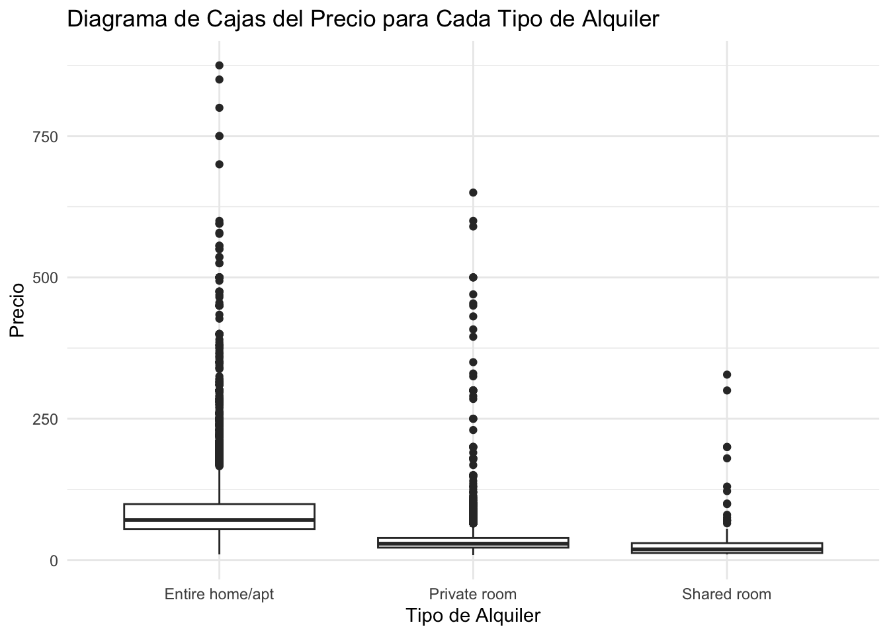

library(ggplot2)
library(dplyr)
Attaching package: 'dplyr'The following objects are masked from 'package:stats':
filter, lagThe following objects are masked from 'package:base':
intersect, setdiff, setequal, unionlibrary(readr)library(ggplot2)
library(dplyr)
Attaching package: 'dplyr'The following objects are masked from 'package:stats':
filter, lagThe following objects are masked from 'package:base':
intersect, setdiff, setequal, unionlibrary(readr)Cargar los datos en un dataframe llamado: airbnb
airbnb<-read.csv('data//airbnb.csv',sep = ',', stringsAsFactors = T)Mostrar las primeras 6 filas del dataframe
Renombrar las columnas de la siguiente forma:
| Nombre original | Nuevo nombre |
|---|---|
| Zipcode | CodigoPostal |
| Neighbourhood.Cleansed | Barrio |
| Property.Type | TipoPropiedad |
| Room.Type | TipoAlquiler |
| Accommodates | MaxOcupantes |
| Bathrooms | NumBanyos |
| Bedrooms | NumDormitorios |
| Beds | NumCamas |
| Bed.Type | TipoCama |
| Amenities | Comodidades |
| Square.Feet | PiesCuadrados |
| Price | Precio |
| Review.Scores.Rating | Puntuacion |
#newnames<-c("CodigoPostal","Barrio","TipoPropiedad","TipoAlquiler","MaxOcupantes","NumBanyos",
#"NumDormitorios","NumCamas","TipoCama","Comodidades","PiesCuadrados","Precio","Puntuacion")
# Nuevo vector de nombres para las columnas
newnames <- c("CodigoPostal", "Barrio", "TipoPropiedad", "TipoAlquiler", "MaxOcupantes",
"NumBanyos", "NumDormitorios", "NumCamas", "TipoCama", "Comodidades",
"PiesCuadrados", "Precio", "Puntuacion")
if (length(newnames) == length(names(airbnb))) {
names(airbnb) <- newnames
} else {
stop("El número de nombres nuevos no coincide con el número de columnas en el dataframe.")
}
names(airbnb) [1] "CodigoPostal" "Barrio" "TipoPropiedad" "TipoAlquiler"
[5] "MaxOcupantes" "NumBanyos" "NumDormitorios" "NumCamas"
[9] "TipoCama" "Comodidades" "PiesCuadrados" "Precio"
[13] "Puntuacion" Ayuda: 1 pie cuadrado son 0,092903 metros cuadrdados
# Crear columna MetrosCuadrados
airbnb$MetrosCuadrados <- airbnb$PiesCuadrados * 0.092903
head(airbnb) CodigoPostal Barrio TipoPropiedad TipoAlquiler MaxOcupantes NumBanyos
1 28004 Universidad Apartment Private room 2 2
2 28004 Universidad Apartment Entire home/apt 6 1
3 28004 Universidad Apartment Entire home/apt 3 1
4 28004 Universidad Loft Entire home/apt 3 2
5 28015 Universidad Apartment Entire home/apt 5 1
6 28004 Universidad Apartment Entire home/apt 2 1
NumDormitorios NumCamas TipoCama
1 1 1 Real Bed
2 3 5 Real Bed
3 2 2 Real Bed
4 1 1 Real Bed
5 1 1 Real Bed
6 0 1 Real Bed
Comodidades
1 TV,Wireless Internet,Kitchen,Pets allowed,Pets live on this property,Buzzer/wireless intercom,Heating,Suitable for events,Washer,First aid kit,Essentials,Lock on bedroom door,Iron
2 TV,Internet,Wireless Internet,Air conditioning,Kitchen,Indoor fireplace,Heating,Family/kid friendly,Washer,Dryer,Smoke detector,Carbon monoxide detector,Essentials,Shampoo
3 TV,Internet,Wireless Internet,Air conditioning,Kitchen,Doorman,Heating,Family/kid friendly,Washer,Essentials,Shampoo,Hangers,Hair dryer,Iron,Laptop friendly workspace
4 TV,Internet,Wireless Internet,Air conditioning,Kitchen,Pets allowed,Breakfast,Elevator in building,Indoor fireplace,Buzzer/wireless intercom,Heating,Washer,Essentials,Shampoo,Hangers,Hair dryer,Iron,Laptop friendly workspace,translation missing: en.hosting_amenity_49,translation missing: en.hosting_amenity_50
5 TV,Wireless Internet,Air conditioning,Kitchen,Smoking allowed,Pets allowed,Elevator in building,Heating,Family/kid friendly,Washer,Essentials,Iron
6 TV,Cable TV,Internet,Wireless Internet,Air conditioning,Wheelchair accessible,Kitchen,Doorman,Elevator in building,Buzzer/wireless intercom,Heating,Washer,Smoke detector,Carbon monoxide detector,First aid kit,Safety card,Fire extinguisher,Essentials,Shampoo,24-hour check-in,Hangers,Hair dryer,Iron,Laptop friendly workspace,Self Check-In,Doorman Entry
PiesCuadrados Precio Puntuacion MetrosCuadrados
1 NA 35 NA NA
2 NA 92 96 NA
3 NA 55 91 NA
4 NA 60 100 NA
5 538 75 90 49.98181
6 NA 55 95 NAEl código postal 28002, 28004 y 28051 tienen entradas repetidas. Por ejemplo las entradas 28002 deberían ir dnetro de 28002
El codigo 2804 debería ser 28004, 2805 deberia ser 28005 y 2815 juncto con 2815 debería ser 28015
Limpia los datos de la columna Codigo Postal
# Asegurarse de que CodigoPostal sea de tipo string
airbnb$CodigoPostal <- as.character(airbnb$CodigoPostal)
# Reemplazar valores vacíos y '-' por NA
airbnb$CodigoPostal[airbnb$CodigoPostal %in% c('', '-')] <- NAhead(airbnb) CodigoPostal Barrio TipoPropiedad TipoAlquiler MaxOcupantes NumBanyos
1 28004 Universidad Apartment Private room 2 2
2 28004 Universidad Apartment Entire home/apt 6 1
3 28004 Universidad Apartment Entire home/apt 3 1
4 28004 Universidad Loft Entire home/apt 3 2
5 28015 Universidad Apartment Entire home/apt 5 1
6 28004 Universidad Apartment Entire home/apt 2 1
NumDormitorios NumCamas TipoCama
1 1 1 Real Bed
2 3 5 Real Bed
3 2 2 Real Bed
4 1 1 Real Bed
5 1 1 Real Bed
6 0 1 Real Bed
Comodidades
1 TV,Wireless Internet,Kitchen,Pets allowed,Pets live on this property,Buzzer/wireless intercom,Heating,Suitable for events,Washer,First aid kit,Essentials,Lock on bedroom door,Iron
2 TV,Internet,Wireless Internet,Air conditioning,Kitchen,Indoor fireplace,Heating,Family/kid friendly,Washer,Dryer,Smoke detector,Carbon monoxide detector,Essentials,Shampoo
3 TV,Internet,Wireless Internet,Air conditioning,Kitchen,Doorman,Heating,Family/kid friendly,Washer,Essentials,Shampoo,Hangers,Hair dryer,Iron,Laptop friendly workspace
4 TV,Internet,Wireless Internet,Air conditioning,Kitchen,Pets allowed,Breakfast,Elevator in building,Indoor fireplace,Buzzer/wireless intercom,Heating,Washer,Essentials,Shampoo,Hangers,Hair dryer,Iron,Laptop friendly workspace,translation missing: en.hosting_amenity_49,translation missing: en.hosting_amenity_50
5 TV,Wireless Internet,Air conditioning,Kitchen,Smoking allowed,Pets allowed,Elevator in building,Heating,Family/kid friendly,Washer,Essentials,Iron
6 TV,Cable TV,Internet,Wireless Internet,Air conditioning,Wheelchair accessible,Kitchen,Doorman,Elevator in building,Buzzer/wireless intercom,Heating,Washer,Smoke detector,Carbon monoxide detector,First aid kit,Safety card,Fire extinguisher,Essentials,Shampoo,24-hour check-in,Hangers,Hair dryer,Iron,Laptop friendly workspace,Self Check-In,Doorman Entry
PiesCuadrados Precio Puntuacion MetrosCuadrados
1 NA 35 NA NA
2 NA 92 96 NA
3 NA 55 91 NA
4 NA 60 100 NA
5 538 75 90 49.98181
6 NA 55 95 NA# Reemplaza valores que no empiezan por 28 por NA
airbnb$CodigoPostal[!grepl('^28', airbnb$CodigoPostal)] <- NAhead(airbnb) CodigoPostal Barrio TipoPropiedad TipoAlquiler MaxOcupantes NumBanyos
1 28004 Universidad Apartment Private room 2 2
2 28004 Universidad Apartment Entire home/apt 6 1
3 28004 Universidad Apartment Entire home/apt 3 1
4 28004 Universidad Loft Entire home/apt 3 2
5 28015 Universidad Apartment Entire home/apt 5 1
6 28004 Universidad Apartment Entire home/apt 2 1
NumDormitorios NumCamas TipoCama
1 1 1 Real Bed
2 3 5 Real Bed
3 2 2 Real Bed
4 1 1 Real Bed
5 1 1 Real Bed
6 0 1 Real Bed
Comodidades
1 TV,Wireless Internet,Kitchen,Pets allowed,Pets live on this property,Buzzer/wireless intercom,Heating,Suitable for events,Washer,First aid kit,Essentials,Lock on bedroom door,Iron
2 TV,Internet,Wireless Internet,Air conditioning,Kitchen,Indoor fireplace,Heating,Family/kid friendly,Washer,Dryer,Smoke detector,Carbon monoxide detector,Essentials,Shampoo
3 TV,Internet,Wireless Internet,Air conditioning,Kitchen,Doorman,Heating,Family/kid friendly,Washer,Essentials,Shampoo,Hangers,Hair dryer,Iron,Laptop friendly workspace
4 TV,Internet,Wireless Internet,Air conditioning,Kitchen,Pets allowed,Breakfast,Elevator in building,Indoor fireplace,Buzzer/wireless intercom,Heating,Washer,Essentials,Shampoo,Hangers,Hair dryer,Iron,Laptop friendly workspace,translation missing: en.hosting_amenity_49,translation missing: en.hosting_amenity_50
5 TV,Wireless Internet,Air conditioning,Kitchen,Smoking allowed,Pets allowed,Elevator in building,Heating,Family/kid friendly,Washer,Essentials,Iron
6 TV,Cable TV,Internet,Wireless Internet,Air conditioning,Wheelchair accessible,Kitchen,Doorman,Elevator in building,Buzzer/wireless intercom,Heating,Washer,Smoke detector,Carbon monoxide detector,First aid kit,Safety card,Fire extinguisher,Essentials,Shampoo,24-hour check-in,Hangers,Hair dryer,Iron,Laptop friendly workspace,Self Check-In,Doorman Entry
PiesCuadrados Precio Puntuacion MetrosCuadrados
1 NA 35 NA NA
2 NA 92 96 NA
3 NA 55 91 NA
4 NA 60 100 NA
5 538 75 90 49.98181
6 NA 55 95 NA# Ver de que CodigoPostal sea de tipo string
airbnb$CodigoPostal <- as.character(airbnb$CodigoPostal)
# Reemplazar con NA los códigos postales que no comienzan con '28'
airbnb$CodigoPostal <- ifelse(substr(airbnb$CodigoPostal, 1, 2) != '28', NA, airbnb$CodigoPostal)
# Obtener y mostrar todos los valores únicos de CodigoPostal
codigos_postales_unicos <- unique(airbnb$CodigoPostal)
print(codigos_postales_unicos) [1] "28004" "28015" "28013" "28005" "28012"
[6] "28014" "28045" NA "28007" "28028"
[11] "28009" "28001" "28006" "28010" "28002"
[16] "28034" "28050" "28008" "28011" "28049"
[21] "28038" "28053" "28047" "28025" "28019"
[26] "28024" "28016" "28036" "28046" "28039"
[31] "28020" "28003" "28029" "28054" "28041"
[36] "28026" "28058" "28018" "28030" "28017"
[41] "28027" "28043" "28033" "28055" "28021"
[46] "28032" "28037" "28022" "28042" "28094"
[51] "280013" "28002\n28002" "28035" "28040" "28031"
[56] "28044" "28105" "28023" "2805" "28051"
[61] "28051\n28051" "28850" "28048" "28056" "28060"
[66] "28" "2815" "28052" "2804" # Asegurarse de que CodigoPostal sea de tipo string
airbnb$CodigoPostal <- as.character(airbnb$CodigoPostal)
# Dividir los códigos postales en '\n' y seleccionar la primera parte
airbnb$CodigoPostal <- sapply(strsplit(airbnb$CodigoPostal, "\n"), `[`, 1)
# Se verifican los valores únicos después de la corrección
unique_codigos_postales <- unique(airbnb$CodigoPostal)
print(unique_codigos_postales) [1] "28004" "28015" "28013" "28005" "28012" "28014" "28045" NA
[9] "28007" "28028" "28009" "28001" "28006" "28010" "28002" "28034"
[17] "28050" "28008" "28011" "28049" "28038" "28053" "28047" "28025"
[25] "28019" "28024" "28016" "28036" "28046" "28039" "28020" "28003"
[33] "28029" "28054" "28041" "28026" "28058" "28018" "28030" "28017"
[41] "28027" "28043" "28033" "28055" "28021" "28032" "28037" "28022"
[49] "28042" "28094" "280013" "28035" "28040" "28031" "28044" "28105"
[57] "28023" "2805" "28051" "28850" "28048" "28056" "28060" "28"
[65] "2815" "28052" "2804" # Se corrige el código postal de '2804' a '28004'
airbnb$CodigoPostal <- gsub("^2804$", "28004", airbnb$CodigoPostal)
# Se corriger el código postal de '2805' a '28005'
airbnb$CodigoPostal <- gsub("^2805$", "28005", airbnb$CodigoPostal)
# se corrige el código postal de '2815' a '28015'
airbnb$CodigoPostal <- gsub("^2815$", "28015", airbnb$CodigoPostal)# Verificar los valores únicos después de las correcciones
unique_codigos_postales <- unique(airbnb$CodigoPostal)
print(unique_codigos_postales) [1] "28004" "28015" "28013" "28005" "28012" "28014" "28045" NA
[9] "28007" "28028" "28009" "28001" "28006" "28010" "28002" "28034"
[17] "28050" "28008" "28011" "28049" "28038" "28053" "28047" "28025"
[25] "28019" "28024" "28016" "28036" "28046" "28039" "28020" "28003"
[33] "28029" "28054" "28041" "28026" "28058" "28018" "28030" "28017"
[41] "28027" "28043" "28033" "28055" "28021" "28032" "28037" "28022"
[49] "28042" "28094" "280013" "28035" "28040" "28031" "28044" "28105"
[57] "28023" "28051" "28850" "28048" "28056" "28060" "28" "28052" # Asegúrate de que la columna CodigoPostal sea de tipo string
airbnb$CodigoPostal <- as.character(airbnb$CodigoPostal)
# Contar las entradas para cada código postal
conteo_codigos_postales <- table(airbnb$CodigoPostal)
# Ordenar los conteos de mayor a menor y seleccionar los 5 con más entradas
codigos_postales_mas_entradas <- sort(conteo_codigos_postales, decreasing = TRUE)[1:5]
# Ordenar los conteos de menor a mayor y seleccionar los 5 con menos entradas
# Excluir los códigos postales con NA o conteos de 0
codigos_postales_menos_entradas <- sort(conteo_codigos_postales[conteo_codigos_postales > 0], decreasing = FALSE)[1:5]# Mostrar los resultados
cat("Los 5 códigos postales con más entradas son:\n")Los 5 códigos postales con más entradas son:print(codigos_postales_mas_entradas)
28012 28004 28005 28013 28014
2060 1795 1195 1019 630 cat("\nLos 5 códigos postales con menos entradas son:\n")
Los 5 códigos postales con menos entradas son:print(codigos_postales_menos_entradas)
28 280013 28048 28052 28056
1 1 1 1 1 cat("\nConteo de entradas para cada código postal:\n")
Conteo de entradas para cada código postal:print(conteo_codigos_postales)
28 28001 280013 28002 28003 28004 28005 28006 28007 28008 28009
1 231 1 171 185 1795 1195 218 206 338 216
28010 28011 28012 28013 28014 28015 28016 28017 28018 28019 28020
384 250 2060 1019 630 601 76 107 43 200 192
28021 28022 28023 28024 28025 28026 28027 28028 28029 28030 28031
58 30 23 44 123 93 122 263 110 73 27
28032 28033 28034 28035 28036 28037 28038 28039 28040 28041 28042
33 89 45 59 67 65 77 160 16 63 90
28043 28044 28045 28046 28047 28048 28049 28050 28051 28052 28053
103 19 495 32 67 1 3 58 17 1 85
28054 28055 28056 28058 28060 28094 28105 28850
12 12 1 1 1 1 1 1 # Filtrar el DataFrame para el código postal 28012
datos_28012 <- subset(airbnb, CodigoPostal == '28012')
# Obtener los barrios únicos en el código postal 28012
barrios_28012 <- unique(datos_28012$Barrio)
# Mostrar los barrios
print("Los barrios en el código postal 28012 son:")[1] "Los barrios en el código postal 28012 son:"print(barrios_28012) [1] Sol Acacias Palos de Moguer Embajadores
[5] Cortes Palacio Universidad Delicias
[9] Arapiles Atocha Goya
125 Levels: Abrantes Acacias Adelfas Aeropuerto Aguilas ... Zofío# Filtrar el DataFrame para el código postal 28012
datos_28012 <- subset(airbnb, CodigoPostal == '28012')
# Agrupar por barrio y contar las entradas en cada uno
conteo_barrios_28012 <- table(datos_28012$Barrio)
# Mostrar el número de entradas por barrio para el código postal 28012
print("Número de entradas por barrio para el código postal 28012:")[1] "Número de entradas por barrio para el código postal 28012:"print(conteo_barrios_28012)
Abrantes Acacias
0 13
Adelfas Aeropuerto
0 0
Aguilas Alameda de Osuna
0 0
Almagro Almenara
0 0
Almendrales Aluche
0 0
Ambroz Amposta
0 0
Apostol Santiago Arapiles
0 1
Aravaca Arcos
0 0
Argüelles Atocha
0 1
Bellas Vistas Berruguete
0 0
Buenavista Butarque
0 0
Campamento Canillas
0 0
Canillejas Cármenes
0 0
Casa de Campo Casco Histórico de Barajas
0 0
Casco Histórico de Vallecas Casco Histórico de Vicálvaro
0 0
Castellana Castilla
0 0
Castillejos Chopera
0 0
Ciudad Jardín Ciudad Universitaria
0 0
Colina Comillas
0 0
Concepción Corralejos
0 0
Cortes Costillares
216 0
Cuatro Caminos Cuatro Vientos
0 0
Delicias El Goloso
1 0
El Plantío El Viso
0 0
Embajadores Entrevías
1449 0
Estrella Fontarrón
0 0
Fuente del Berro Fuentelareina
0 0
Gaztambide Goya
0 1
Guindalera Hellín
0 0
Hispanoamérica Ibiza
0 0
Imperial Jerónimos
0 0
Justicia La Paz
0 0
Legazpi Lista
0 0
Los Angeles Los Rosales
0 0
Lucero Marroquina
0 0
Media Legua Mirasierra
0 0
Moscardó Niño Jesús
0 0
Nueva España Numancia
0 0
Opañel Orcasitas
0 0
Orcasur Pacífico
0 0
Palacio Palomas
27 0
Palomeras Bajas Palomeras Sureste
0 0
Palos de Moguer Pavones
46 0
Peñagrande Pilar
0 0
Pinar del Rey Piovera
0 0
Portazgo Pradolongo
0 0
Prosperidad Pueblo Nuevo
0 0
Puerta Bonita Puerta del Angel
0 0
Quintana Recoletos
0 0
Rejas Rios Rosas
0 0
Rosas Salvador
0 0
San Andrés San Cristobal
0 0
San Diego San Fermín
0 0
San Isidro San Juan Bautista
0 0
San Pascual Santa Eugenia
0 0
Simancas Sol
0 301
Timón Trafalgar
0 0
Universidad Valdeacederas
4 0
Valdefuentes Valdemarín
0 0
Valdezarza Vallehermoso
0 0
Valverde Ventas
0 0
Vinateros Vista Alegre
0 0
Zofío
0 # Asegúrate de que la columna Barrio sea de tipo string
airbnb$Barrio <- as.character(airbnb$Barrio)
# Obtener los barrios únicos en todo el dataset
barrios_unicos <- unique(airbnb$Barrio)
# Contar cuántos barrios únicos hay
numero_barrios <- length(barrios_unicos)
# Mostrar el número de barrios y los barrios
print(paste("Número de barrios únicos en el dataset:", numero_barrios))[1] "Número de barrios únicos en el dataset: 125"print("Barrios únicos en el dataset:")[1] "Barrios únicos en el dataset:"print(barrios_unicos) [1] "Universidad" "Sol"
[3] "Imperial" "Acacias"
[5] "Chopera" "Delicias"
[7] "Palos de Moguer" "Embajadores"
[9] "Cortes" "Atocha"
[11] "Pacífico" "Adelfas"
[13] "Estrella" "Ibiza"
[15] "Jerónimos" "Niño Jesús"
[17] "Palacio" "Justicia"
[19] "Recoletos" "Goya"
[21] "Fuente del Berro" "Arapiles"
[23] "Trafalgar" "Almagro"
[25] "Guindalera" "Lista"
[27] "Castellana" "El Viso"
[29] "Prosperidad" "Valverde"
[31] "Casa de Campo" "El Goloso"
[33] "Numancia" "Cármenes"
[35] "Puerta del Angel" "Lucero"
[37] "Aluche" "San Isidro"
[39] "Campamento" "Comillas"
[41] "Opañel" "Vista Alegre"
[43] "Ciudad Jardín" "Hispanoamérica"
[45] "Nueva España" "Castilla"
[47] "Bellas Vistas" "Cuatro Caminos"
[49] "Castillejos" "Vallehermoso"
[51] "Almenara" "Valdeacederas"
[53] "Berruguete" "Gaztambide"
[55] "Rios Rosas" "Peñagrande"
[57] "Argüelles" "Puerta Bonita"
[59] "Buenavista" "Abrantes"
[61] "Orcasur" "San Fermín"
[63] "Almendrales" "Pradolongo"
[65] "Portazgo" "Entrevías"
[67] "San Diego" "Palomeras Bajas"
[69] "Fontarrón" "Vinateros"
[71] "Ventas" "Pueblo Nuevo"
[73] "Quintana" "Concepción"
[75] "San Juan Bautista" "Costillares"
[77] "Piovera" "Canillas"
[79] "Pinar del Rey" "Apostol Santiago"
[81] "San Andrés" "Valdefuentes"
[83] "Butarque" "Los Angeles"
[85] "Casco Histórico de Vicálvaro" "Simancas"
[87] "Rejas" "Salvador"
[89] "Casco Histórico de Barajas" "Pilar"
[91] "La Paz" "Mirasierra"
[93] "Ciudad Universitaria" "Moscardó"
[95] "Palomeras Sureste" "Marroquina"
[97] "Media Legua" "Los Rosales"
[99] "Casco Histórico de Vallecas" "Timón"
[101] "Corralejos" "Cuatro Vientos"
[103] "Colina" "San Cristobal"
[105] "Alameda de Osuna" "Aeropuerto"
[107] "Palomas" "Zofío"
[109] "Aguilas" "Legazpi"
[111] "Fuentelareina" "Aravaca"
[113] "Ambroz" "Canillejas"
[115] "Valdezarza" "Amposta"
[117] "San Pascual" "Santa Eugenia"
[119] "Arcos" "Rosas"
[121] "Valdemarín" "El Plantío"
[123] "Hellín" "Pavones"
[125] "Orcasitas" # Asegúrate de que la columna Barrio sea de tipo string
airbnb$Barrio <- as.character(airbnb$Barrio)
# Contar las entradas en cada barrio y ordenar
conteo_barrios <- airbnb %>%
group_by(Barrio) %>%
summarise(NumeroEntradas = n()) %>%
arrange(desc(NumeroEntradas)) %>%
head(5)
# Crear una gráfica de barras para los 5 barrios con más entradas
ggplot(conteo_barrios, aes(x = reorder(Barrio, NumeroEntradas), y = NumeroEntradas)) +
geom_bar(stat = "identity", fill = "blue") +
theme_minimal() +
labs(title = "Top 5 Barrios con Mayor Número de Entradas en Airbnb",
x = "Barrio",
y = "Número de Entradas") +
coord_flip() # Girar la gráfica para una mejor visualización# Asegúrate de que la columna TipoAlquiler sea de tipo string
airbnb$TipoAlquiler <- as.character(airbnb$TipoAlquiler)
# Contar y listar los tipos de alquiler diferentes
tipos_alquiler_unicos <- unique(airbnb$TipoAlquiler)
numero_tipos_alquiler <- length(tipos_alquiler_unicos)
# Contar las entradas en el dataframe para cada tipo de alquiler
conteo_tipos_alquiler <- table(airbnb$TipoAlquiler)
# Mostrar la información
print(paste("Número de tipos de alquiler diferentes:", numero_tipos_alquiler))[1] "Número de tipos de alquiler diferentes: 3"print("Tipos de alquiler únicos:")[1] "Tipos de alquiler únicos:"print(tipos_alquiler_unicos)[1] "Private room" "Entire home/apt" "Shared room" print("Número de entradas por tipo de alquiler:")[1] "Número de entradas por tipo de alquiler:"print(conteo_tipos_alquiler)
Entire home/apt Private room Shared room
7903 5113 191 Muestra el diagrama de cajas del precio para cada uno de los diferentes Tipos de Alquiler
# Excluir filas con valores no finitos en la columna Precio
airbnb_limpio <- subset(airbnb, !is.na(Precio) & Precio != Inf & Precio != -Inf)
# Crear un diagrama de cajas del precio para cada tipo de alquiler con datos limpios
ggplot(airbnb_limpio, aes(x = TipoAlquiler, y = Precio)) +
geom_boxplot() +
theme_minimal() +
labs(title = "Diagrama de Cajas del Precio para Cada Tipo de Alquiler",
x = "Tipo de Alquiler",
y = "Precio")
Si la diferencia en el precio medio de alquiler entre los diferentes tipos de alquiler es estadísticamente significativa, podemos realizar un test ANOVA o Kruskal-Wallis. El test a utilizar depende de la distribución de los datos. Si los datos cumplen con los supuestos de ANOVA (normalidad y homogeneidad de varianzas), se puede utilizar ANOVA. Si los datos no cumplen con los supuestos de ANOVA, se puede utilizar Kruskal-Wallis.
# Asegúrate de que las columnas estén en el formato correcto
airbnb$TipoAlquiler <- as.character(airbnb$TipoAlquiler)
airbnb$Precio <- as.numeric(airbnb$Precio)
# Calcular el precio medio de alquiler para cada tipo
precios_medios <- airbnb %>%
group_by(TipoAlquiler) %>%
summarise(PrecioMedio = mean(Precio, na.rm = TRUE))
print("Precio medio de alquiler por tipo:")[1] "Precio medio de alquiler por tipo:"print(precios_medios)# A tibble: 3 × 2
TipoAlquiler PrecioMedio
<chr> <dbl>
1 Entire home/apt 87.3
2 Private room 34.3
3 Shared room 29.9# Realizar un test ANOVA o Kruskal-Wallis para comparar las medias
# El test a utilizar depende de la distribución de los datos
# Ejemplo con ANOVA:
resultados_anova <- aov(Precio ~ TipoAlquiler, data = airbnb)
print(summary(resultados_anova)) Df Sum Sq Mean Sq F value Pr(>F)
TipoAlquiler 2 8981217 4490608 1828 <2e-16 ***
Residuals 13195 32417217 2457
---
Signif. codes: 0 '***' 0.001 '**' 0.01 '*' 0.05 '.' 0.1 ' ' 1
9 observations deleted due to missingness# Si los datos no cumplen con los supuestos de ANOVA, usar Kruskal-Wallis
# resultados_kruskal <- kruskal.test(Precio ~ TipoAlquiler, data = airbnb)
# print(resultados_kruskal)# Filtrar el DataFrame para entradas donde el tipo de alquiler es 'Entire home/apt'
airbnb_entire <- subset(airbnb, TipoAlquiler == 'Entire home/apt')
# Mostrar las primeras filas del nuevo DataFrame
head(airbnb_entire) CodigoPostal Barrio TipoPropiedad TipoAlquiler MaxOcupantes NumBanyos
2 28004 Universidad Apartment Entire home/apt 6 1
3 28004 Universidad Apartment Entire home/apt 3 1
4 28004 Universidad Loft Entire home/apt 3 2
5 28015 Universidad Apartment Entire home/apt 5 1
6 28004 Universidad Apartment Entire home/apt 2 1
8 28004 Universidad Apartment Entire home/apt 3 1
NumDormitorios NumCamas TipoCama
2 3 5 Real Bed
3 2 2 Real Bed
4 1 1 Real Bed
5 1 1 Real Bed
6 0 1 Real Bed
8 1 NA Real Bed
Comodidades
2 TV,Internet,Wireless Internet,Air conditioning,Kitchen,Indoor fireplace,Heating,Family/kid friendly,Washer,Dryer,Smoke detector,Carbon monoxide detector,Essentials,Shampoo
3 TV,Internet,Wireless Internet,Air conditioning,Kitchen,Doorman,Heating,Family/kid friendly,Washer,Essentials,Shampoo,Hangers,Hair dryer,Iron,Laptop friendly workspace
4 TV,Internet,Wireless Internet,Air conditioning,Kitchen,Pets allowed,Breakfast,Elevator in building,Indoor fireplace,Buzzer/wireless intercom,Heating,Washer,Essentials,Shampoo,Hangers,Hair dryer,Iron,Laptop friendly workspace,translation missing: en.hosting_amenity_49,translation missing: en.hosting_amenity_50
5 TV,Wireless Internet,Air conditioning,Kitchen,Smoking allowed,Pets allowed,Elevator in building,Heating,Family/kid friendly,Washer,Essentials,Iron
6 TV,Cable TV,Internet,Wireless Internet,Air conditioning,Wheelchair accessible,Kitchen,Doorman,Elevator in building,Buzzer/wireless intercom,Heating,Washer,Smoke detector,Carbon monoxide detector,First aid kit,Safety card,Fire extinguisher,Essentials,Shampoo,24-hour check-in,Hangers,Hair dryer,Iron,Laptop friendly workspace,Self Check-In,Doorman Entry
8 TV,Wireless Internet,Air conditioning,Kitchen,Elevator in building,Buzzer/wireless intercom,Heating,Washer
PiesCuadrados Precio Puntuacion MetrosCuadrados
2 NA 92 96 NA
3 NA 55 91 NA
4 NA 60 100 NA
5 538 75 90 49.98181
6 NA 55 95 NA
8 NA 70 84 NA# Asegúrate de que la columna Barrio sea de tipo string
airbnb_entire$Barrio <- as.character(airbnb_entire$Barrio)
# Contar las entradas en cada barrio
conteo_barrios <- table(airbnb_entire$Barrio)
# Ordenar los conteos de mayor a menor y seleccionar los 5 barrios con más entradas
top_5_barrios <- sort(conteo_barrios, decreasing = TRUE)[1:5]
# Mostrar los resultados
print("Los 5 barrios con mayor número de apartamentos enteros en alquiler son:")[1] "Los 5 barrios con mayor número de apartamentos enteros en alquiler son:"print(top_5_barrios)
Embajadores Universidad Palacio Sol Cortes
1228 984 769 701 574 Ayuda: Usa la función aggregate aggregate(.~colname,df,mean,na.rm=TRUE)
# Asegúrate de que las columnas estén en el formato correcto
airbnb_entire$Barrio <- as.character(airbnb_entire$Barrio)
airbnb_entire$Precio <- as.numeric(airbnb_entire$Precio)# Usar aggregate para calcular el precio medio por barrio
precio_medio_por_barrio <- aggregate(Precio ~ Barrio, airbnb_entire, mean, na.rm = TRUE)top_5_barrios_precio_medio <- head(precio_medio_por_barrio[order(precio_medio_por_barrio$Precio, decreasing = TRUE), ], 5)print("Los 5 barrios con el mayor precio medio de alquiler para apartamentos enteros son:")[1] "Los 5 barrios con el mayor precio medio de alquiler para apartamentos enteros son:"print(top_5_barrios_precio_medio) Barrio Precio
77 Palomas 309.7500
50 Fuentelareina 180.0000
93 Recoletos 161.9254
43 El Plantío 150.0000
30 Castellana 141.3889Mostrar una dataframe con el nombre del barrio, el precio y el número de entradas.
Ayuda: Podeis crear un nuevo dataframe con las columnas “Barrio” y “Freq” que contenga el número de entradas en cada barrio y hacer un merge con el dataframe del punto anterior.
# Contar las entradas (apartamentos) en cada uno de los 5 barrios superiores
conteo_apartamentos_top5 <- airbnb_entire %>%
filter(Barrio %in% top_5_barrios_precio_medio$Barrio) %>%
group_by(Barrio) %>%
summarise(Freq = n())
# Mostrar el conteo de apartamentos
print("Número de apartamentos en los 5 barrios con mayor precio medio:")[1] "Número de apartamentos en los 5 barrios con mayor precio medio:"print(conteo_apartamentos_top5)# A tibble: 5 × 2
Barrio Freq
<chr> <int>
1 Castellana 73
2 El Plantío 1
3 Fuentelareina 2
4 Palomas 4
5 Recoletos 135# Fusionar el conteo de apartamentos con el precio medio por barrio
informacion_detallada <- merge(top_5_barrios_precio_medio, conteo_apartamentos_top5, by = "Barrio")
# Mostrar el DataFrame final
print("Información detallada de los 5 barrios con mayor precio medio:")[1] "Información detallada de los 5 barrios con mayor precio medio:"print(informacion_detallada) Barrio Precio Freq
1 Castellana 141.3889 73
2 El Plantío 150.0000 1
3 Fuentelareina 180.0000 2
4 Palomas 309.7500 4
5 Recoletos 161.9254 135# Contar las entradas en cada barrio
conteo_barrios <- airbnb_entire %>%
group_by(Barrio) %>%
summarise(NumeroEntradas = n())
# Filtrar los barrios con más de 100 entradas
barrios_mas_100_entradas <- conteo_barrios[conteo_barrios$NumeroEntradas > 100, ]# Calcular el precio medio de alquiler para cada barrio
precio_medio_por_barrio <- aggregate(Precio ~ Barrio, airbnb_entire, mean, na.rm = TRUE)
# Fusionar con los barrios que tienen más de 100 entradas
barrios_filtrados <- merge(barrios_mas_100_entradas, precio_medio_por_barrio, by = "Barrio")
# Ordenar por precio medio y seleccionar los 5 primeros
top_5_barrios_precio_mas_100_entradas <- head(barrios_filtrados[order(barrios_filtrados$Precio, decreasing = TRUE), ], 5)
# Mostrar los resultados
print("Los 5 barrios con mayor precio medio y más de 100 entradas son:")[1] "Los 5 barrios con mayor precio medio y más de 100 entradas son:"print(top_5_barrios_precio_mas_100_entradas) Barrio NumeroEntradas Precio
8 Recoletos 135 161.92537
4 Goya 142 111.33803
9 Sol 701 100.75036
10 Trafalgar 223 98.57848
5 Justicia 534 98.25468library(ggplot2)
# Asegúrate de que las columnas estén en el formato correcto
airbnb_entire$Barrio <- as.character(airbnb_entire$Barrio)
airbnb_entire$Precio <- as.numeric(airbnb_entire$Precio)
# Filtrar el DataFrame para excluir valores no finitos en la columna Precio
datos_filtrados <- subset(airbnb_entire, !is.na(Precio) & Precio != Inf & Precio != -Inf & Barrio %in% top_5_barrios)library(dplyr)
# Asegurándonos de que top_5_barrios contiene los barrios correctos
# Esta línea ya está en tu código, asegúrate de que se ejecuta correctamente.
top_5_barrios <- names(sort(table(airbnb_entire$Barrio), decreasing = TRUE)[1:5])
# Filtrar para incluir solo los top 5 barrios
datos_filtrados <- airbnb_entire %>%
filter(Barrio %in% top_5_barrios)
# Calcular el precio medio, tamaño medio y número de entradas por barrio
resumen_barrios <- datos_filtrados %>%
group_by(Barrio) %>%
summarise(
PrecioMedio = mean(Precio, na.rm = TRUE),
TamañoMedioM2 = mean(MetrosCuadrados, na.rm = TRUE),
NumeroEntradas = n()
)
# Mostrar el resumen
print(resumen_barrios)# A tibble: 5 × 4
Barrio PrecioMedio TamañoMedioM2 NumeroEntradas
<chr> <dbl> <dbl> <int>
1 Cortes 94.4 14.0 574
2 Embajadores 73.7 27.7 1228
3 Palacio 93.3 29.7 769
4 Sol 101. 45.6 701
5 Universidad 79.4 32.8 984library(ggplot2)
# Asegúrate de que las columnas estén en el formato correcto
airbnb_entire$Barrio <- as.character(airbnb_entire$Barrio)
airbnb_entire$Precio <- as.numeric(airbnb_entire$Precio)
# Asegúrate de filtrar el dataframe para incluir solo los top 5 barrios y excluir valores no finitos
datos_filtrados <- subset(airbnb_entire, !is.na(Precio) & Precio != Inf & Precio != -Inf & Barrio %in% top_5_barrios)
# Crear un diagrama de densidad para cada barrio con datos filtrados
ggplot(datos_filtrados, aes(x = Precio, fill = Barrio)) +
geom_density(alpha = 0.5) +
facet_wrap(~ Barrio, scales = "free") + # Usar `scales = "free"` para permitir diferentes escalas en los ejes Y
theme_minimal() +
labs(title = "Distribución de los Precios por Barrio",
x = "Precio",
y = "Densidad") +
theme(legend.position = "bottom")library(ggplot2)
library(dplyr)
# Asegúrate de que las columnas estén en el formato correcto
airbnb_entire$Barrio <- as.character(airbnb_entire$Barrio)
airbnb_entire$MetrosCuadrados <- as.numeric(airbnb_entire$MetrosCuadrados)
# Identificar los top 5 barrios por alguna métrica, por ejemplo, número de listados
# Si ya tienes identificados tus top_5_barrios, asegúrate de que esta línea refleje correctamente esos barrios
top_5_barrios <- names(sort(table(airbnb_entire$Barrio), decreasing = TRUE)[1:5])
# Filtrar el DataFrame para incluir solo los top 5 barrios y excluir valores no finitos en la columna de tamaño
datos_filtrados <- airbnb_entire %>%
filter(Barrio %in% top_5_barrios & !is.na(MetrosCuadrados) & MetrosCuadrados != Inf & MetrosCuadrados > 0)
# Crear un diagrama de densidad para cada barrio con datos filtrados
ggplot(datos_filtrados, aes(x = MetrosCuadrados, fill = Barrio)) +
geom_density(alpha = 0.5) +
facet_wrap(~ Barrio, scales = "free") +
theme_minimal() +
labs(title = "Distribución del Tamaño de los Apartamentos por Barrio",
x = "Tamaño (Metros Cuadrados)",
y = "Densidad") +
theme(legend.position = "bottom")¿son estadísticamente diferentes?
Los resultados de las pruebas estadísticas que has realizado proporcionan información valiosa sobre las diferencias en el tamaño de los apartamentos entre los cinco barrios seleccionados. Aquí está un análisis detallado de estos resultados:
Pruebas de Shapiro-Wilk para Normalidad:
Los resultados muestran que los tamaños de los apartamentos en la mayoría de los barrios seleccionados no siguen una distribución normal, excepto en el barrio “Goya” (p = 0.5199 > 0.05, indicando normalidad). En “Sol”, “Justicia”, “Recoletos” y “Trafalgar”, los valores p son significativamente bajos, sugiriendo que los datos no se distribuyen normalmente. Prueba de Levene para Homogeneidad de Varianzas:
El test de Levene no muestra diferencias significativas en las varianzas entre los grupos (p = 0.2673 > 0.05), lo que sugiere que las varianzas son homogéneas. Test ANOVA:
A pesar de la homogeneidad de varianzas, el valor p del ANOVA (p = 0.637 > 0.05) indica que no hay diferencias estadísticamente significativas en las medias de los tamaños de los apartamentos entre los cinco barrios. Test de Kruskal-Wallis:
Dado que los datos no siguen una distribución normal en la mayoría de los barrios, el test de Kruskal-Wallis es más apropiado. El test de Kruskal-Wallis también indica que no hay diferencias estadísticamente significativas en las medias de los tamaños de los apartamentos entre los cinco barrios (p = 0.7574 > 0.05). Conclusiones: La falta de normalidad en los tamaños de los apartamentos en la mayoría de los barrios sugiere la necesidad de utilizar métodos no paramétricos como el test de Kruskal-Wallis. Tanto el ANOVA como el test de Kruskal-Wallis concluyen que no hay diferencias significativas en las medias de los tamaños de los apartamentos entre los cinco barrios seleccionados. Esto implica que, aunque los barrios pueden tener características distintas que afectan el precio medio, el tamaño de los apartamentos no varía significativamente entre estos barrios desde un punto de vista estadístico. Estos resultados son importantes para entender cómo el tamaño de los apartamentos contribuye a la dinámica del mercado inmobiliario en estos barrios y pueden informar decisiones relacionadas con inversiones inmobiliarias o estrategias de precios.
¿Que test habría que usar para comprobarlo?
Consideraciones para Elegir el Test Adecuado Normalidad de los Datos:
Si los datos son normalmente distribuidos en cada grupo, se pueden considerar pruebas paramétricas como el ANOVA (Análisis de Varianza). Si los datos no siguen una distribución normal, deberíamos optar por pruebas no paramétricas como el test de Kruskal-Wallis. Homogeneidad de las Varianzas:
Si las varianzas son homogéneas (iguales entre los grupos), el ANOVA es adecuado. Si las varianzas no son homogéneas, incluso con datos normalmente distribuidos, se puede considerar el uso de Welch’s ANOVA o métodos no paramétricos.
Pasos para el Análisis Prueba de Normalidad:
Se puede realizar una prueba de Shapiro-Wilk o una prueba de normalidad gráfica (por ejemplo, QQ plots) para cada grupo. Prueba de Homogeneidad de Varianzas:
Utilizar la prueba de Levene o Bartlett para evaluar si las varianzas son homogéneas. Ejecutar el Test Adecuado:
Si los datos pasan las pruebas de normalidad y homogeneidad de varianzas, ejecutar un ANOVA. Si no, optar por Kruskal-Wallis o Welch’s ANOVA.
library(ggplot2)
library(car) # Para la prueba de Levene para homogeneidad de varianzasLoading required package: carData
Attaching package: 'car'The following object is masked from 'package:dplyr':
recodelibrary(dplyr)
# 'datos_top_5_barrios' debe ser un dataframe que contenga solo los datos de los top 5 barrios
# Debe incluir las columnas 'Barrio' y 'MetrosCuadrados' correctamente formateadas
# Aplicar la prueba de Shapiro-Wilk a cada uno de los 5 barrios
datos_top_5_barrios <- datos_filtrados # Asegúrate de que esta variable contenga los datos correctos
print("Pruebas de Shapiro-Wilk para Normalidad")[1] "Pruebas de Shapiro-Wilk para Normalidad"for(barrio in unique(datos_top_5_barrios$Barrio)) {
print(paste("Prueba de Shapiro-Wilk para", barrio, ":"))
datos_barrio <- filter(datos_top_5_barrios, Barrio == barrio)
test <- shapiro.test(datos_barrio$MetrosCuadrados)
print(test)
}[1] "Prueba de Shapiro-Wilk para Universidad :"
Shapiro-Wilk normality test
data: datos_barrio$MetrosCuadrados
W = 0.9345, p-value = 0.03814
[1] "Prueba de Shapiro-Wilk para Sol :"
Shapiro-Wilk normality test
data: datos_barrio$MetrosCuadrados
W = 0.90899, p-value = 0.003528
[1] "Prueba de Shapiro-Wilk para Embajadores :"
Shapiro-Wilk normality test
data: datos_barrio$MetrosCuadrados
W = 0.9753, p-value = 0.5865
[1] "Prueba de Shapiro-Wilk para Cortes :"
Shapiro-Wilk normality test
data: datos_barrio$MetrosCuadrados
W = 0.87865, p-value = 0.0556
[1] "Prueba de Shapiro-Wilk para Palacio :"
Shapiro-Wilk normality test
data: datos_barrio$MetrosCuadrados
W = 0.86348, p-value = 0.01121# Prueba de Levene para Homogeneidad de Varianzas
print("Prueba de Levene para Homogeneidad de Varianzas:")[1] "Prueba de Levene para Homogeneidad de Varianzas:"levene_test <- car::leveneTest(MetrosCuadrados ~ Barrio, data = datos_top_5_barrios)Warning in leveneTest.default(y = y, group = group, ...): group coerced to
factor.print(levene_test)Levene's Test for Homogeneity of Variance (center = median)
Df F value Pr(>F)
group 4 3.8114 0.005685 **
139
---
Signif. codes: 0 '***' 0.001 '**' 0.01 '*' 0.05 '.' 0.1 ' ' 1# Realizar el test ANOVA
print("Test ANOVA para diferencias en Metros Cuadrados entre Barrios:")[1] "Test ANOVA para diferencias en Metros Cuadrados entre Barrios:"anova_result <- aov(MetrosCuadrados ~ Barrio, data = datos_top_5_barrios)
print(summary(anova_result)) Df Sum Sq Mean Sq F value Pr(>F)
Barrio 4 19952 4988 3.986 0.0043 **
Residuals 139 173959 1252
---
Signif. codes: 0 '***' 0.001 '**' 0.01 '*' 0.05 '.' 0.1 ' ' 1Para únicamente los pisos de alquiler en el barrio de Sol:
barrio_sol<-subset(airbnb_entire,Barrio=="Sol")
Calcular un modelo lineal que combine alguna de estas variables: * NumBanyos * NumDormitorios * MaxOcupantes * MetrosCuadrados
# Filtrar los datos para el barrio de Sol
barrio_sol <- subset(airbnb_entire, Barrio == "Sol")
# Asegúrate de que las columnas estén en el formato correcto
barrio_sol$NumBanyos <- as.numeric(barrio_sol$NumBanyos)
barrio_sol$NumDormitorios <- as.numeric(barrio_sol$NumDormitorios)
barrio_sol$MaxOcupantes <- as.numeric(barrio_sol$MaxOcupantes)
barrio_sol$MetrosCuadrados <- as.numeric(barrio_sol$MetrosCuadrados)
# Calcular la matriz de correlación para las variables seleccionadas
matriz_correlacion <- cor(barrio_sol[,c("NumBanyos", "NumDormitorios", "MaxOcupantes", "MetrosCuadrados")], use = "complete.obs")
# Mostrar la matriz de correlación
print("Matriz de correlación entre las variables seleccionadas:")[1] "Matriz de correlación entre las variables seleccionadas:"print(matriz_correlacion) NumBanyos NumDormitorios MaxOcupantes MetrosCuadrados
NumBanyos 1.0000000 0.6873719 0.7017290 0.4820549
NumDormitorios 0.6873719 1.0000000 0.7853809 0.5684521
MaxOcupantes 0.7017290 0.7853809 1.0000000 0.4286233
MetrosCuadrados 0.4820549 0.5684521 0.4286233 1.0000000Mediante un histograma o curvas de densidad podemos descartar números que notienen sentido en el dataframe barrio_sol, para tener una matriz de correlación que tenga mayor sentido.
# Limpiar los datos: eliminar filas con valores NA o atípicos
barrio_sol <- subset(barrio_sol, !is.na(NumDormitorios) & !is.na(MetrosCuadrados))
# Aquí puedes añadir más condiciones para tratar valores atípicos si es necesario
# Crear histograma para NumDormitorios
ggplot(barrio_sol, aes(x = NumDormitorios)) +
geom_histogram(bins = 10, fill = "blue", alpha = 0.7) +
labs(title = "Distribución del Número de Dormitorios en el Barrio de Sol",
x = "Número de Dormitorios",
y = "Frecuencia") +
theme_minimal()# Crear curva de densidad para MetrosCuadrados
ggplot(barrio_sol, aes(x = MetrosCuadrados)) +
geom_density(fill = "green", alpha = 0.7) +
labs(title = "Distribución de Metros Cuadrados en el Barrio de Sol",
x = "Metros Cuadrados",
y = "Densidad") +
theme_minimal()¿Que variable es más fiable para conocer el precio de un inmueble, el número de habitaciones o los metros cuadrados?
Para determinar qué variable es más fiable para predecir el precio de un inmueble en el barrio de Sol, ya sea el número de habitaciones (NumDormitorios) o los metros cuadrados (MetrosCuadrados), podemos utilizar un análisis de regresión lineal. Este análisis nos permitirá evaluar la relación de cada una de estas variables con el precio del inmueble y determinar cuál de ellas tiene una mayor influencia.
Preparar los Datos:
Construir Modelos de Regresión Lineal:
Construye un modelo de regresión lineal con NumDormitorios como variable predictora y Precio como variable de respuesta.
Construye otro modelo con MetrosCuadrados como variable predictora y Precio como variable de respuesta.
Evaluar los Modelos:
# Cargar la librería necesaria para la regresión
library(lmtest)Loading required package: zoo
Attaching package: 'zoo'The following objects are masked from 'package:base':
as.Date, as.Date.numeric# Modelo de regresión con NumDormitorios
modelo_dormitorios <- lm(Precio ~ NumDormitorios, data = barrio_sol)
summary(modelo_dormitorios)
Call:
lm(formula = Precio ~ NumDormitorios, data = barrio_sol)
Residuals:
Min 1Q Median 3Q Max
-93.239 -14.705 -6.205 14.714 104.473
Coefficients:
Estimate Std. Error t value Pr(>|t|)
(Intercept) 50.527 7.554 6.689 9.73e-09 ***
NumDormitorios 30.678 3.927 7.812 1.26e-10 ***
---
Signif. codes: 0 '***' 0.001 '**' 0.01 '*' 0.05 '.' 0.1 ' ' 1
Residual standard error: 35.33 on 58 degrees of freedom
Multiple R-squared: 0.5127, Adjusted R-squared: 0.5043
F-statistic: 61.03 on 1 and 58 DF, p-value: 1.265e-10# Modelo de regresión con MetrosCuadrados
modelo_metros <- lm(Precio ~ MetrosCuadrados, data = barrio_sol)
summary(modelo_metros)
Call:
lm(formula = Precio ~ MetrosCuadrados, data = barrio_sol)
Residuals:
Min 1Q Median 3Q Max
-61.403 -25.126 -6.573 10.003 138.353
Coefficients:
Estimate Std. Error t value Pr(>|t|)
(Intercept) 69.57277 6.70573 10.375 7.79e-15 ***
MetrosCuadrados 0.61367 0.09721 6.313 4.13e-08 ***
---
Signif. codes: 0 '***' 0.001 '**' 0.01 '*' 0.05 '.' 0.1 ' ' 1
Residual standard error: 38.96 on 58 degrees of freedom
Multiple R-squared: 0.4073, Adjusted R-squared: 0.397
F-statistic: 39.85 on 1 and 58 DF, p-value: 4.134e-08El precio del alquiler por cada metro cuadrado extra del piso, con un margen de error del 95%, debemos referirnos al modelo de regresión lineal que relaciona los MetrosCuadrados con el Precio. En particular, necesitamos examinar el coeficiente de la variable MetrosCuadrados en este modelo, así como su intervalo de confianza.
Extraer el Coeficiente:
MetrosCuadrados en el modelo de regresión nos dirá cuánto cambia el precio en promedio por cada metro cuadrado adicional.Calcular el Intervalo de Confianza del 95%:
# Extraer el coeficiente para MetrosCuadrados
coeficiente_metros <- coef(modelo_metros)["MetrosCuadrados"]
# Calcular el intervalo de confianza del 95%
intervalo_confianza <- confint(modelo_metros, "MetrosCuadrados", level = 0.95)
# Mostrar los resultados
print(paste("Incremento en el precio por cada metro cuadrado extra:", coeficiente_metros))[1] "Incremento en el precio por cada metro cuadrado extra: 0.613673495951023"print("Intervalo de confianza del 95% para el coeficiente:")[1] "Intervalo de confianza del 95% para el coeficiente:"print(intervalo_confianza) 2.5 % 97.5 %
MetrosCuadrados 0.4190858 0.8082612# Asumiendo que ya tienes el modelo de regresión creado
# Modelo: modelo_dormitorios <- lm(Precio ~ NumDormitorios, data = barrio_sol)
# Extraer el coeficiente para NumDormitorios
coeficiente_dormitorios <- coef(modelo_dormitorios)["NumDormitorios"]
# Calcular el intervalo de confianza del 95%
intervalo_confianza_dormitorios <- confint(modelo_dormitorios, "NumDormitorios", level = 0.95)
# Mostrar los resultados
print(paste("Incremento en el precio por cada habitación adicional:", coeficiente_dormitorios))[1] "Incremento en el precio por cada habitación adicional: 30.6779242174629"print("Intervalo de confianza del 95% para el coeficiente de habitaciones:")[1] "Intervalo de confianza del 95% para el coeficiente de habitaciones:"print(intervalo_confianza_dormitorios) 2.5 % 97.5 %
NumDormitorios 22.81741 38.53844# Asumiendo que ya tienes el DataFrame barrio_sol
# Calcular la probabilidad de un apartamento con 3 dormitorios
total_apartamentos = nrow(barrio_sol)
apartamentos_3_dormitorios = sum(barrio_sol$NumDormitorios == 3, na.rm = TRUE)
probabilidad_3_dormitorios = apartamentos_3_dormitorios / total_apartamentos
# Calcular el intervalo de confianza del 95%
prop_error_estandar <- sqrt((probabilidad_3_dormitorios * (1 - probabilidad_3_dormitorios)) / total_apartamentos)
z <- qnorm(0.975) # Valor Z para un intervalo de confianza del 95%
intervalo_confianza <- c(probabilidad_3_dormitorios - z * prop_error_estandar, probabilidad_3_dormitorios + z * prop_error_estandar)
# Mostrar los resultados
print(paste("Probabilidad de encontrar un apartamento con 3 dormitorios en Sol:", probabilidad_3_dormitorios))[1] "Probabilidad de encontrar un apartamento con 3 dormitorios en Sol: 0.0666666666666667"print("Intervalo de confianza del 95% para esta probabilidad:")[1] "Intervalo de confianza del 95% para esta probabilidad:"print(intervalo_confianza)[1] 0.00354983 0.12978350